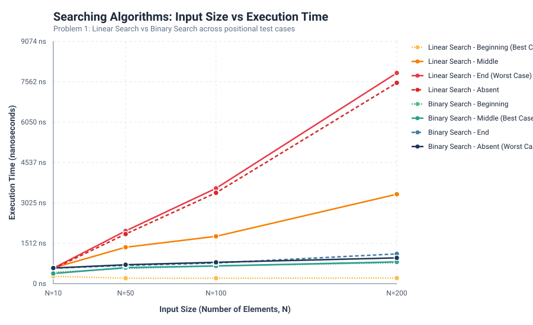

| Algorithm | Input Size (N) | Test Case | Target | Found Index | Comparisons | Time (ns) | Time (µs) |
|---|---|---|---|---|---|---|---|
| Linear Search | 10 | Beginning | 26 |
0 | 1 | 275.19 ns | 0.2752 µs |
| Linear Search | 10 | Middle | 251 |
5 | 6 | 590.02 ns | 0.5900 µs |
| Linear Search | 10 | End | 760 |
9 | 10 | 577.56 ns | 0.5776 µs |
| Linear Search | 10 | Absent | 1760 |
-1 | 10 | 554.75 ns | 0.5548 µs |
| Binary Search | 10 | Beginning | 26 |
0 | 3 | 422.83 ns | 0.4228 µs |
| Binary Search | 10 | Middle | 251 |
5 | 3 | 379.75 ns | 0.3798 µs |
| Binary Search | 10 | End | 760 |
9 | 4 | 578.26 ns | 0.5783 µs |
| Binary Search | 10 | Absent | 1760 |
-1 | 4 | 584.33 ns | 0.5843 µs |
| Linear Search | 50 | Beginning | 7 |
0 | 1 | 203.67 ns | 0.2037 µs |
| Linear Search | 50 | Middle | 430 |
25 | 26 | 1363.10 ns | 1.3631 µs |
| Linear Search | 50 | End | 981 |
49 | 50 | 1973.99 ns | 1.9740 µs |
| Linear Search | 50 | Absent | 1981 |
-1 | 50 | 1857.78 ns | 1.8578 µs |
| Binary Search | 50 | Beginning | 7 |
0 | 5 | 571.22 ns | 0.5712 µs |
| Binary Search | 50 | Middle | 430 |
25 | 5 | 602.09 ns | 0.6021 µs |
| Binary Search | 50 | End | 981 |
49 | 6 | 683.29 ns | 0.6833 µs |
| Binary Search | 50 | Absent | 1981 |
-1 | 6 | 707.59 ns | 0.7076 µs |
| Linear Search | 100 | Beginning | 7 |
0 | 1 | 202.75 ns | 0.2028 µs |
| Linear Search | 100 | Middle | 465 |
50 | 51 | 1772.19 ns | 1.7722 µs |
| Linear Search | 100 | End | 990 |
99 | 100 | 3570.30 ns | 3.5703 µs |
| Linear Search | 100 | Absent | 1990 |
-1 | 100 | 3402.05 ns | 3.4020 µs |
| Binary Search | 100 | Beginning | 7 |
0 | 6 | 659.14 ns | 0.6591 µs |
| Binary Search | 100 | Middle | 465 |
50 | 6 | 663.85 ns | 0.6638 µs |
| Binary Search | 100 | End | 990 |
99 | 7 | 772.49 ns | 0.7725 µs |
| Binary Search | 100 | Absent | 1990 |
-1 | 7 | 798.43 ns | 0.7984 µs |
| Linear Search | 200 | Beginning | 7 |
0 | 1 | 209.17 ns | 0.2092 µs |
| Linear Search | 200 | Middle | 1035 |
100 | 101 | 3348.57 ns | 3.3486 µs |
| Linear Search | 200 | End | 1993 |
199 | 200 | 7890.75 ns | 7.8908 µs |
| Linear Search | 200 | Absent | 2993 |
-1 | 200 | 7520.56 ns | 7.5206 µs |
| Binary Search | 200 | Beginning | 7 |
0 | 7 | 786.23 ns | 0.7862 µs |
| Binary Search | 200 | Middle | 1035 |
100 | 7 | 814.11 ns | 0.8141 µs |
| Binary Search | 200 | End | 1993 |
199 | 8 | 1114.03 ns | 1.1140 µs |
| Binary Search | 200 | Absent | 2993 |
-1 | 8 | 965.25 ns | 0.9653 µs |